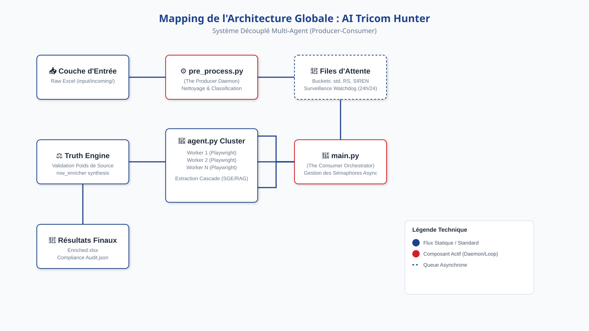
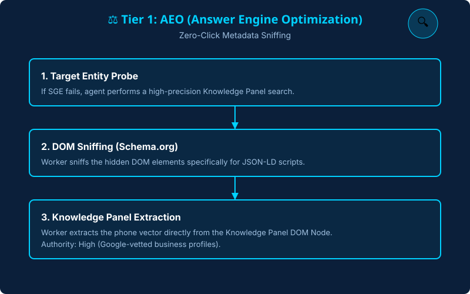
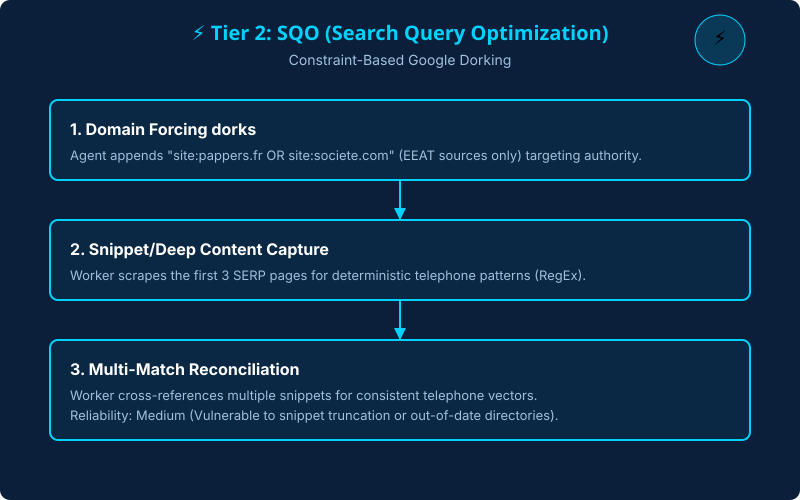
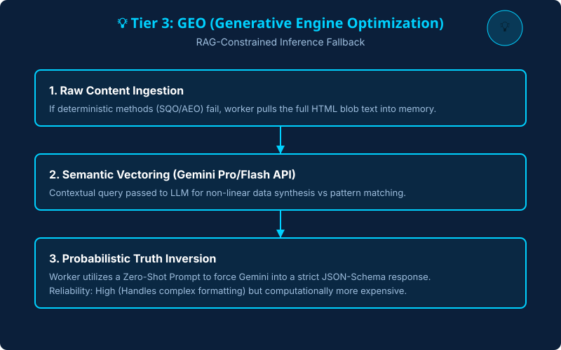
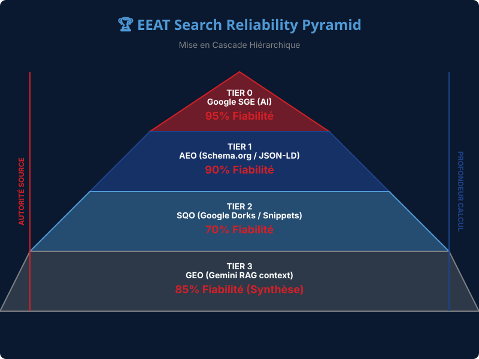

Projet de Fin d'Études (PFE)
Systèmes Distribués et IA Appliquée
Le Goulot d'Étranglement Déterministe et la Dégradation des Données
| Archétype Technologique | Le Problème (Limites) |
|---|---|
| Agrégateurs Statiques (Apollo) | Générer des données obsolètes. Couvrir faiblement les PME locales. |
| Automatisation Cloud (PhantomBuster) | Contourner les Anti-Bots, mais échouer sur les changements du DOM. |
| Génération LLM Pure (Perplexity) | Risquer d'halluciner des valeurs spécifiques (tel, SIREN, NAF). |
👉 Aucun système ne parvient à fusionner la validation déterministe avec l'inférence IA à grande échelle.
Créer un Moteur Multi-Agent Bifurqué
Un système asynchrone découplant l'ingestion de l'exécution multi-agent.

Stratégies hiérarchiques avec "Double Check" Expert.
Le Problème (V1-V3) :
Le stockage en liste causait des décalages si l'IA ajoutait une colonne imprévue.
La Solution Industrielle (V4) :
Mapping par dictionnaire au moment de l'écriture Excel.
La stratégie "Double Chance" :
"En tant qu'expert chercheur en
renseignement B2B avec 20 ans
d'expérience... Fouillez FB, LinkedIn..."
Fonctionnement :


En cas d'échec des méthodes directes, le système descend dans la cascade pour analyser le contenu brut des sites avec Gemini.
Résoudre les conflits d'extraction IA via un système de confiance pondéré.

Plus le système monte (Tier 0), plus la certitude est absolue. Plus il descend (Tier 3), plus l'analyse est profonde.
| Métrique | Monolithe initial | Architecture Multi-Agent |
|---|---|---|
| Concurrence Max | 1 Nœud (Blocage RAM) | 25+ Nœuds (Async WebSocket) |
| Fidélité d'Extraction | ~45% | > 88% (Contraint par RAG) |
| Résistance aux Crashs | Ajustement manuel | Assignation dictionnaire (Anti-décalage) |
Déployer via des Topologies OS-Agnostic et Caching